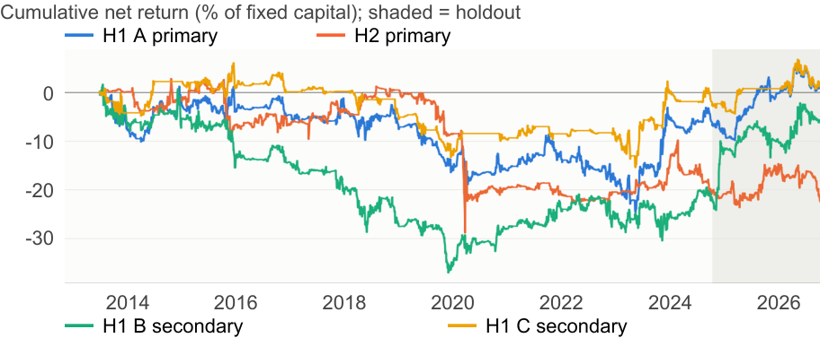

Gator Quant Hacks 2026 | Systematic Trading Track
Aman Vyas, Zhicheng Li, Nicolas Slenko
Research note | 4 October 2026
Both frozen primaries are rejected under the registered decisions. H1 failed its placements test and development trading condition (net Sharpe -0.08); H2 failed its exposure, prediction and trading tests (net Sharpe -0.29). The once-evaluated holdout delivered net Sharpes of +0.63 for H1 and -0.15 for H2. H1 meets only its positive-holdout-Sharpe condition: the development failures still determine rejection. Neither study establishes a tradable edge.
H1 mechanism. Low feeding margins could reduce placements over the next one to three months and fed-cattle supply five to six months after placement. Feedlots may also pay speculators to bear their short-hedging risk [1, 2]. The proxy assumes an 800 lb steer, about 64 bushels of corn and sale at 1,400 lb roughly five months later. Projected dollars per head:
M = 1,400 × LE - 800 × FC - 64.29 × C - $350.
LE, FC and C are dollar-unit CME settlements, selecting Live Cattle at least 150 days from expiry, Feeder Cattle at least 30 days and corn at least 75 days. The z-score uses the 36 prior month-ends, excluding the current month. Because $350 cancels, low z means relative margin distress, not necessarily negative absolute profit.
H2 follow-up. If equity investors underreact to cattle cost news [3, 4], cattle price rises should precede sector-relative losses in Tyson (TSN) and Texas Roadhouse (TXRH). This assumes a common negative cost exposure despite different businesses and potential price pass-through. The two-stock surviving universe is not independent corroboration of H1.
H1 was committed before its first backtest. Relevant CFTC availability and GF final-price deviations were committed after the first logged C/B runs; earlier declared row times do not prove prior commitment. H2 was conceived after H1 failed and registered before its first logged run, but detailed implementation choices were committed afterward; its t-statistic reporting fix was explicitly post-result. Neither primary was replaced. Commit/run timestamps remain in the review chronology [11].
All later execution corrections, uncertainty intervals and funding supplements are post-evaluation evidence [14], not additional preregistered confirmation. The NASS probe and limits of holdout-access verification are disclosed below.
The expected maximum annual Sharpe under the null is 0.31. DSR is approximate for correlated trials and dependent returns. Overlays, diagnostics and other team projects are outside these 25 configurations; the count cannot certify absence of unlogged research. Raw-run counts and snapshot differences are reconciled in the review documentation [11, 14].
Holdout-access qualification. The 2 October NASS probe returned post-cutoff rows in memory. The log says values were neither displayed nor saved, but last-year/row-count information was exposed before the boundary was enforced. Absolute claims that no holdout data was accessed are therefore unsupported; these records do not establish tuning on those values.
Sources. Databento GLBX.MDP3 supplies CME definitions, settlements and daily bars for LE/GF/ZC [6]. Revised USDA NASS placements for US feedlots with 1,000+ head are P1 outcomes only, dated by reference month [7]. CFTC producer/merchant positions filter C using delayed availability rules, including documented disruptions [8]. yfinance adjusted closes supply TSN, TXRH, XLP, XLY and SPY [9]. Development outcomes end before 1 October 2024.
Method. Returns are arithmetic P&L on fixed $1M initial capital, without collateral interest or compounding; futures contracts are fractional. Month-end signals execute at next-day settlement (H2: next NYSE close). P&L stays within contracts; rolls pay both legs. Missing settlements or a limit-locked leg defer the whole trade; unknown high/low ranges originally counted as unlocked. H1 charges one tick plus $2.50 per contract per side; H2 charges 5 bps stocks, 2 bps ETFs and 0.50%/yr borrow. Gross, net and doubled-cost results are distinguished.
Registered rules. A: w = clip(-z/2, -1, 1) × 10% / 60-day volatility, capped at |w| ≤ 2. B trades the uncapped head-unit margin spread; C filters A by commercial hedging pressure. P1 requires β > 0 and Newey-West (NW) t > 2; P2 requires positive development mean with t > 2 and positive holdout Sharpe. P3 compares futures with a front-futures-based spot proxy.
| H1 test / NW lags | Estimate | t | n |
|---|---|---|---|
| P1: placements YoY, t+1 to t+3 / 3 | β +0.0020 per s.d. | 0.42 | 133 |
| P2: A mean monthly net / 5 | -0.045% | -0.34 | 135 |
| P3: sale return to expiry / 6 | β -0.0087 | -0.65 | 127 |
| P3: spot change / 6 | β +$0.020/lb | 1.10 | 127 |
P1 and P2 fail. A one-unit lower z is associated with 0.20% fewer placements (95% HAC interval -1.12% to +0.73%), about 11,000 fewer head at the sample mean (interval -63,000 to +41,000). This is not causal evidence; P3 establishes neither futures nor spot-proxy predictability.
| H1 development | Ann. ret. | Vol. | Sharpe | Max DD | Turnover /yr |
|---|---|---|---|---|---|
| A primary, net | -0.54% | 6.4% | -0.08 | 25.5% | 6.5× |
| A gross | -0.39% | 6.4% | -0.06 | 24.4% | 6.5× |
| A 2× costs | -0.69% | 6.4% | -0.11 | 26.8% | 6.5× |
| A + overlay, net | -0.92% | 5.0% | -0.18 | 20.6% | 4.9× |
| B secondary, net | -1.94% | 7.0% | -0.28 | 38.1% | 23.4× |
| C secondary, net | -0.18% | 4.8% | -0.04 | 20.3% | 4.4× |
A trades July 2013-September 2024 (2,834 days). Its monthly net mean has a 95% HAC interval of -0.3076% to +0.2177% [14]. Only 15 month-ends have z < -1; their +$153/head five-month margin recovery compares changing contracts, not held-contract profit. The registered failures do not exclude every economically useful effect.
Primary rule. s is the month's within-contract Live Cattle return divided by its standard deviation over 36 prior months; the contract has at least 45 days to expiry at selection. TSN/XLP and TXRH/XLY hedges use prior-252-day betas. Equal stock weights follow w = -clip(s/2, -1, 1) × 10% / 60-day basket volatility. Stock-plus-hedge gross is capped at 2× initial capital; each stock at 1×. Q1/Q2 require β < 0 and t < -2; Q3 requires positive development mean with t > 2 and positive holdout Sharpe. NW uses two lags.
| H2 test | Estimate | NW t | n |
|---|---|---|---|
| Q1: hedged basket on same-month LE return | β +0.0098 | 0.10 | 170 months |
| Q2: next-month basket on s | β +0.0036 | 0.88 | 134 signals |
| Q3: mean monthly net | -0.15% | -1.08 | 134 months |
All three fail; Q1/Q2 estimates have the wrong sign. H2 trades 1 August 2013-30 September 2024 (2,810 days), with 134 monthly signals rather than independent daily decisions. Q1 does not establish the assumed negative cattle exposure, so these results do not identify immediate pricing as the reason delayed predictability fails.
| H2 primary | Ann. ret. | Vol. | Sharpe | Max DD |
|---|---|---|---|---|
| Gross | -1.49% | 6.4% | -0.23 | 28.7% |
| Net | -1.84% | 6.4% | -0.29 | 30.8% |
| 2× costs | -2.20% | 6.4% | -0.34 | 33.2% |
Costs and exposure. Turnover was 6.9×/yr; trading costs 0.25%/yr and borrow 0.11%/yr. Mean gross exposure was 0.42×; only 10/134 signals had |s| ≥ 2. The sector-hedged basket held long earned +0.52%/month (t = 1.57); cattle timing lost money. Q3's 95% HAC interval is -0.4315% to +0.1245% per month [14].
Concentration. Stock-plus-sector-hedge pairs contributed -12.1% (TXRH/XLY) and -4.5% (TSN/XLP) to cumulative gross P&L of -16.6%. H2 therefore remains a limited two-name test. Its four registered alternatives, factor attribution and volume-based capacity were not completed; no five-trial H2-only DSR is claimed.
P1 tests a linear association across 133 observations, not a separate distressed-cohort effect. The placement response and subsequent feeding lag need not align with the roughly five-month sale contract; P2 retargets monthly rather than holding one cohort to completion. Missing closeout calibration and the futures-based spot proxy leave several explanations for failure unresolved.
Existing development diagnostics help interpret the signal: A's returns correlate 0.86 with a seasonal-only rule over 75 months (regression R² = 0.74). In the joint P1 regression controlling for the LE revenue-leg z-score, the margin coefficient has t = 1.79. Neither diagnostic replaces the frozen test or establishes an edge [11].
Trial disclosure. There are 25 recorded distinct cattle-project trials: 24 H1 configurations and one H2 primary. Full-sample net Sharpe ranges from -0.42 to +0.21; the largest monthly t is 0.86. Corrected common-window comparisons start 2 January 2015 (best Sharpe 0.20); seasonal comparisons start 1 August 2018 (best 0.23, t = 0.90). No comparison selects a replacement primary.
| 25-trial Sharpe adjustment [5] | Net Sharpe | PSR vs 0 | DSR |
|---|---|---|---|
| H1 A primary | -0.08 | 0.39 | 0.09 |
| H2 primary | -0.29 | 0.17 | 0.02 |
| Best reported trial: B, seasonal | +0.21 | 0.70 | 0.40 |
Risk controls and stress. The supplemental H1 overlay halves size when its own fixed-capital drawdown exceeds 15% at month-end and restores full size within 7.5% of peak, executing next day. The frozen primary excludes it. A's factor alpha is -1.0%/yr (t = -0.64, R² = 0.08) against long-only cattle, cattle momentum and SPY. A lost 5.5% in March-May 2020 and 1.4% around the August 2019 Holcomb fire; H2 lost 9.9% in March-May 2020. Two adverse LE limit moves (8.50, then 12.75 cents/lb) at 2× leverage imply a 22.9% capital loss. Monthly controls cannot ensure timely exits.
Liquidity and capital. Actual-order 1%-ADV AUM illustrations are $1.28M A, $0.76M B and $1.52M C, not profitable capacity. Gross/current-NAV peaks are 2.18×, 7.49× and 2.07×. B's margin/NAV peaks at 41.6%; its largest five-session loss-plus-margin envelope is $339k using current margins, not historical calls [14]. Impact, intraday funding and full current exchange-rule compliance remain unverified [13].
Exploratory funding sensitivity (post-hoc). With doubled current margin proxies and a 20% NAV haircut, modeled end-of-day collateral remained sufficient for A but showed shortfalls for B on saved development positions [14]. This hypothetical check assumes all NAV is eligible before haircuts, with no spread offsets; it establishes neither historical margin calls, timely cash availability nor control effectiveness.
Prospective governance (post-evaluation). A qualitative assessment of four scenarios—limit locks, funding pressure, uncertain execution and missing H2 capacity/borrow evidence—requires proposed risk, funding and execution owners to approve funding, confirm fills, escalate unresolved positions and block deployment when essential evidence is missing [14]. Initial-capital caps do not cap current-NAV leverage; historical funding envelopes are not sufficient reserves. These unimplemented procedures establish neither loss reduction nor stressed funding adequacy; both primaries remain rejected.
Execution and data limits. Unknown session ranges affected 8/202 A LE order legs. A post-evaluation development correction deferring unknown ranges leaves Sharpes negative: A -0.081, B -0.260, C -0.032. Feed gaps, inferred finals before 2017 and four missing B GF cash finals remain limitations. The 136-input-per-root H1 receipt audit does not certify all input vintages or fills [14].
Reproducibility. Frozen artifacts and the original lock are preserved. Post-evaluation supplements use existing development records and require exact licensed/local inputs; offline verification is not demonstrated judge-side reproduction of every headline result. Holdout turnover is unavailable without a saved ledger and is not inferred. No holdout re-evaluation was performed.
The frozen evaluation used commit 58d6299, locked before results at 00:45 ET on 4 October 2026 [11]. The period is 1 October 2024-2 October 2026: H1 has 504 trading days; the saved H2 table has 503 observations.
| Holdout result | Ann. ret. | Vol. | Sharpe | Max DD |
|---|---|---|---|---|
| H1 A primary, net | +3.88% | 6.1% | +0.63 | 5.4% |
| H1 A gross / 2× costs | +3.97% / +3.79% | 6.1% | +0.65 / +0.62 | 5.4% / 5.5% |
| H2 primary, net | -1.03% | 6.7% | -0.15 | 7.6% |
| H2 gross / 2× costs | -0.51% / -1.56% | 6.7% | -0.08 / -0.23 | 7.2% / 8.0% |
| H1 B secondary, net | +8.03% | 9.3% | +0.86 | 6.5% |
| H1 C secondary, net | +2.14% | 5.0% | +0.43 | 5.6% |
Monthly means (NW t): A +0.31% (0.97), H2 -0.08% (-0.27), B +0.64% (1.40), C +0.17% (0.80). A meets P2's positive holdout Sharpe condition; H2 fails Q3. Holdout turnover is missing. A's net drawdown is rounded directly from the saved 5.4467% value; no returns were recomputed.

Figure 1. Archived cumulative net returns, 2013-October 2026, on fixed capital without compounding. Shading marks the holdout; B/C remain secondary.
Conclusion. Both frozen primaries remain rejected. A's holdout Sharpe of +0.63 has large uncertainty (approximate standard error 0.7; monthly t = 0.97), and cannot reverse P1 or P2's development failure. H2 fails both development and holdout trading conditions. These results reject the registered rules; limited precision and imperfect economic proxies prevent a broader claim that no relevant economic relationship exists. Exploratory post-hoc funding sensitivity also distinguishes the variants: with doubled current margin proxies and a 20% NAV haircut, modeled collateral remained sufficient for A but showed shortfalls for B. This establishes neither timely cash availability nor control effectiveness. Later corrections and supplements are post-evaluation evidence, not a new confirmation.
[1] Keynes, J. M. (1930). A Treatise on Money. Macmillan.
[2] de Roon, F. A., Nijman, T. E., and Veld, C. H. (2000). Hedging Pressure Effects in Futures Markets. Journal of Finance, 55(3), 1437-1456.
[3] Cohen, L., and Frazzini, A. (2008). Economic Links and Predictable Returns. Journal of Finance, 63(4), 1977-2011.
[4] Menzly, L., and Ozbas, O. (2010). Market Segmentation and Cross-predictability of Returns. Journal of Finance, 65(4), 1555-1580.
[5] Bailey, D. H., and López de Prado, M. (2014). The Deflated Sharpe Ratio: Correcting for Selection Bias, Backtest Overfitting, and Non-Normality. Journal of Portfolio Management, 40(5), 94-107.
[6] Databento. GLBX.MDP3 licensed CME Globex definitions, statistics and daily bars. databento.com/docs . No raw licensed data is included in this review.
[7] USDA NASS. Quick Stats, monthly Cattle on Feed placements, US feedlots with capacity 1,000+ head. quickstats.nass.usda.gov .
[8] CFTC. Disaggregated Commitments of Traders, futures only, Live Cattle code 057642, dataset 72hh-3qpy. publicreporting.cftc.gov . Release-disruption records are cited in the project's manual references.
[9] Yahoo Finance via yfinance. Split/dividend-adjusted closes for TSN, TXRH, XLP, XLY and SPY. finance.yahoo.com .
[10] CME Group. Current price limits, contract specifications and initial margins; CFTC Part 150 federal limits. The original project's manual reference files supply retrieval dates. Current margins are applied to historical positions, as disclosed in the main note.
[11] Project records: HYPOTHESIS.md (initial commit e9334b9), HYPOTHESIS_H2.md (cb7a954), their deviation logs, SUBMISSION_FREEZE.md, and committed result tables/figures at 240c27c. The narrative distinguishes initial registrations, later development decisions and post-result reporting fixes.
[12] Gator Quant Hacks. Official Systematic Trading track instructions, “Writing the Quant Note” and submission checklist. https://www.gqhacks.com/tracks/systematic-trading . Checked 4 October 2026: PDF; at most five pages including tables/figures; 11 pt or larger; standard margins; references and an optional chart appendix excluded.
[13] CME Chapter 10102.E; September 2025 surveillance notice MSN09-17-25; CFTC 2020 position-limit final rule, footnote 594. Links and current-completeness qualifications: review/regulatory_check.md.
[14] Post-evaluation review and extension, 4 October 2026: review/README.md; review/extension/REPORT.md and tables; review/editorial_revision/EDITORIAL_NOTES.md. Intervals use registered HAC lags and normal asymptotics. Funding and capacity are conditional descriptive measures. Scenario assessment: review/risk_methodology_assessment.md. Submission artifact check: python verify_submission.py; this does not reproduce backtests.